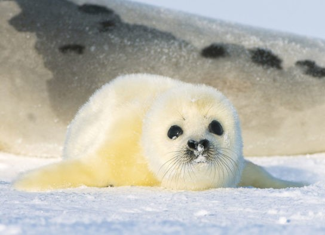
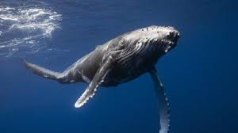
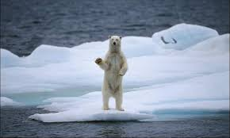
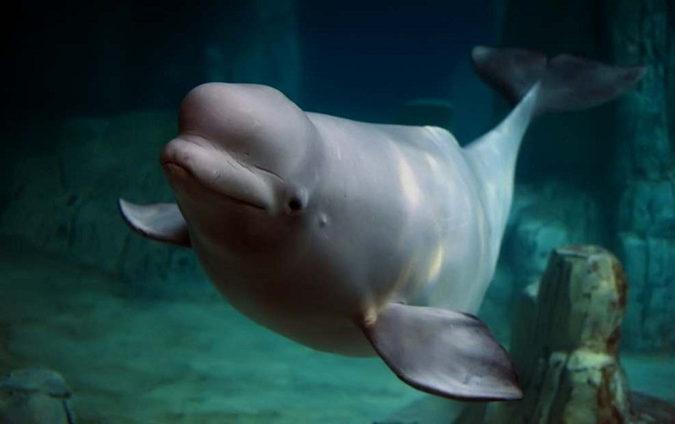

Пірнай з нами!
Приєднуйся до океничного світу,та дізнавайтесь нові підводні таємниці
Суворий клімат накладає свій відбиток на різноманітність органічного світу Північного Льодовитого океану. Тваринний світ не відрізняється великою різноманітністю. У Північному Льодовитому океані живе 150 видів риб, велика частина їх – промислові (оселедець, тріска, пікша, морський окунь, сайда і ін.). Птахи проживають на узбережжі океану, утворюючи колонії. Нараховують тут всього 30 видів. Ссавці, які живуть у водах Північно-льодовитого океану і його узбереж – тюлені, моржі, кити (смугастики і гренландський кит), лемінги, північні олені і песці. Характерний представник Арктики – білий ведмідь.


Нарвал однорогий,єдиноріг(Monodon monoceros) — рідкісний вид ссавців родини нарвалових. Поширений в арктичних водах. Довжина тварини зазвичай становить 4–5 метрів, не враховуючи бивня, який може сягати 3 метрів у найбільших самців. Нарвал найтісніше споріднений з білухою.
Лисун гренландський(Pagophilus groenlandica) — Поширений в Арктиці вид морських ссавців родини справжніх тюленів з парворяду ластоногих.Довжина тіла – до 193 см, маса – до 160 кг. Забарвлення дорослих гренландських тюленів жовтувато-біле, на боках тулуба та на голові темні плям
—
—
—